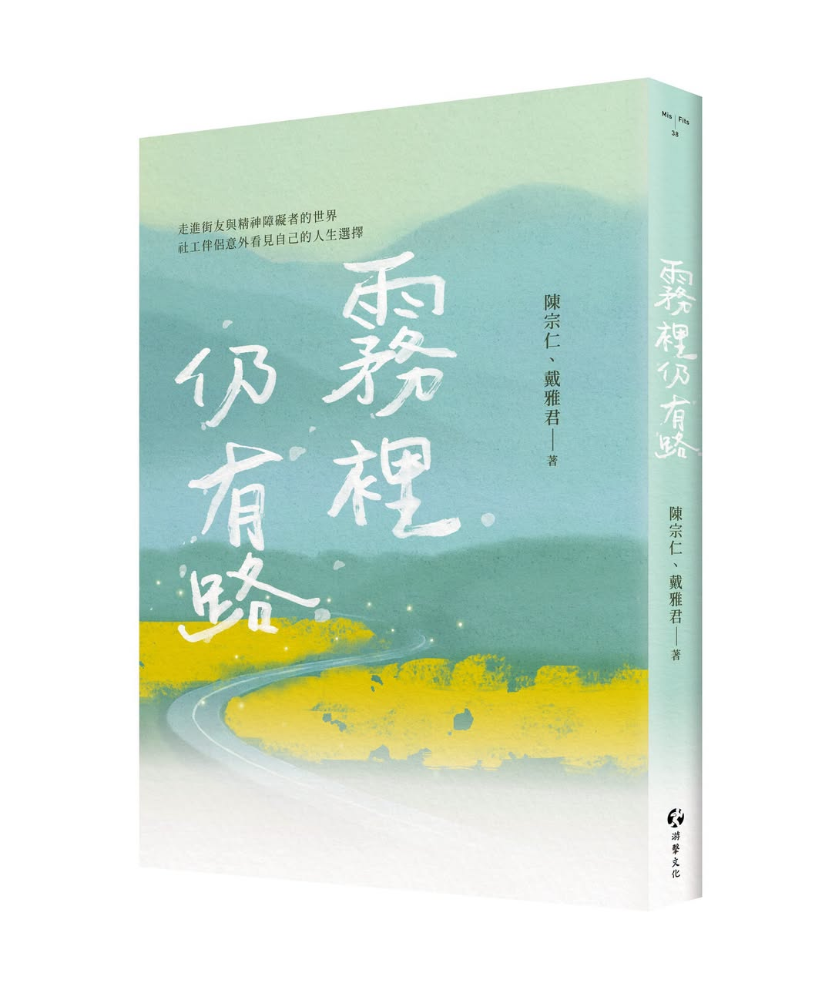

「精神分裂症」更名為「思覺失調症」，究竟改變了什麼？一位思覺失調症當事人從「區分」如何生成「歧視」談起，主張真正需要消融的，不是病名，而是人與人之間由恐懼與偏見築起的界線。
閱讀全文 →
本期小編向大家隆重介紹將於8月5日上市的新書——《霧裡仍有路：走進街友與精神障礙者的世界，社工伴侶意外看見自己的人生選擇》，是由從事社區工作多年的陳宗仁與戴雅君共同撰寫。小編有幸受邀掛名推薦，得以先睹為快。
閱讀全文 →專為思覺失調症、躁鬱症、重鬱症患者家屬設計的8堂連續課程，從認識疾病、危機處理，到「善待自己、重整生活」，8/6起每週四於淡水開課，免費參加。8堂裡有7堂在講怎麼照顧病人，只有1堂講照顧者自己——這個比例，正說明了家屬的處境。
閱讀全文 →從疾病認識、自我狀態判斷、預防復發到自我調適，8堂團體課程陪伴康復者重新認識自己。8/24起每週一於板橋，免費參加。
閱讀全文 →由復元中的當事人擔任助人者，同儕支持專業化的過程。第三季課程8月2日登場，開放報名。
閱讀全文 →由具備復元經驗的人協助他人，在「復元」與「賦權」上是否有效？一篇統合分析檢視多國隨機對照試驗的結果，為前一則的同儕支持員訓練提供實證後盾。
閱讀全文 →介於「住家裡」與「住機構」之間的第三種選擇。4至6人小家共同生活，房租補助＋專業人員生活協助。
閱讀全文 →試刊號進入第二期，刊名也從「相倚傍報你知」改成更易讀的「做伙行」。今天正是強制住院改採法庭審理制上路的日子。本期兩大重點：全國社區心衛地圖，以及《霧裡仍有路》新書，另外還有一些構想想聽聽大家的意見。
閱讀全文 →